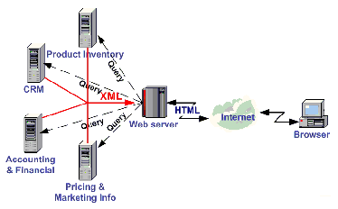
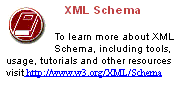
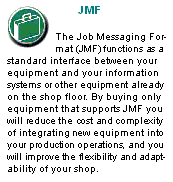

This specification is immense ... there is little doubt about that ... but it is also a keystone standard for the future of graphic communications. The members of CIP4 believe that users and developers alike need to have a clear understanding of what the objectives of the Job Definition Format (JDF) are as well as an understanding of its value and purpose. To that end we thought you would find a “non-standard” preface and user overview helpful.
Before we get into the overview, we remind you that JDF is a living specification. We would value your comments and input. There are several ways to contact the International Cooperation for the Integration of Processes in Prepress, Press and Postpress (CIP4) and to receive ongoing information about CIP4 activities. To get a list of contacts, join the JDF developers form, or sign up for Email updates, visit the contact page at http://www.cip4.org/ . (Of course, we’d love to have you as a CIP4 member too! Be sure to review the membership page when you visit the CIP4 Website.)
You will also find callouts throughout this document that are identified by three different icons. These callouts, provided for your convenience, are not normative parts of the standard, i.e., they’re not technically a part of the standard . They provide references to external sources, executive summaries of complex technical concepts, and some thoughts or strategies to consider as you formulate your JDF implementation plan. Look for these callout icons
Value. This revision of JDF is significant because it builds upon the fourth version of JDF ( v.1.3 ) to deliver a fully functional and mature standard. As such, this revision includes elements from which executives, shop managers and technicians will all benefit equally, though in different ways. In the next few years it is our belief that this specification will positively effect everyone involved in the creation and production of printing; regardless of form (offset, digital, flexographic and so on) or function (direct mail, periodical publication, packaging and so on). Furthermore, JDF will be of value to companies both large and small. Some of the benefits that JDF provides include:
Most importantly, JDF provides an opportunity for users of graphic arts equipment to get a better return on their technology investment and an opportunity to create a print production and distribution workflow that is more competitive with broadcast media in terms of time-to-market.
XML and Schema: Why? The Extensible Markup Language (XML) is the standard language that is employed by JDF. JDF is also constructed to the World Wide Web Consortium’s (W3C) recommendation for the construction of schema. Why is this important and, in layman’s terms, what does it do for you?
First of all, it is helpful to understand how MIS professionals around the world use XML today. Although there are some systems that manage and process XML directly, it is primarily used as an exchange language or “middleware” element to create the “glue” that ties integrated systems together.
 For instance, complex systems such as enterprise resource planning (ERP), data warehousing or E- commerce systems often tap into numerous legacy databases and application environments. A manager might wish to have a “view” of corporate information that is actually an aggregate of information that might come from various sources such as billing and invoicing, sales management, inventory and other systems. Rather than merge these systems into a single, monstrous and centralized system, an operator queries the legacy systems and the results are wrapped in XML. This allows programmers to deal with one exchange language or data format instead of a multitude of proprietary data formats.
XML is not a functional computer language like JAVA, C++ or FORTRAN--it is incapable of manipulating data in anyway; rather, it is a descriptive computer language that can be used to describe your information including its structure, interrelationships, and to some extent, its intended usage. For this reason, modern program languages such as JAVA provide intrinsic support for XML processing. Most modern database applications also provide methods for receiving and delivering XML.
 Early XML, based solely upon the XML 1.0 specification, had a few limitations that prevented it from being used widely as a transactional data format across enterprises, as opposed to within enterprises (where it found its niche as described above.) For example, there is probably a database behind each of your major systems and applications. If your database has reserved a fixed space a data particular field and a supplier provides a transaction with a data element larger than that field, you have a problem. The data limitations of XML 1.0 cannot effectively deal with this. The XML Schema specification solved this problem and others.
The Plusses of Parsing. Schemas also provide one other feature that is perhaps the greatest benefit. Tagged documents or transactions (called “instances” in XML parlance) are parsible . Schemas, such as JDF, establish rules for structuring your information. A parser is a software application that reads those rules, checks documents and transactions, and then validates that they conform to the rules as established in your schema ... sort of like preflighting but for XML instances rather than your layout pages.
Parsers can play many roles. Like preflighting software, parsers can be run as stand-alone applications, but they can also be found embedded into other applications. Some of the roles parsers can play in your JDF-enabled workflow include:
It is worth mentioning that parsing can be time consuming and computer intensive. But parsers don’t have to be the gatekeepers everywhere in a JDF-enabled workflow. Equipment that is JDF-enabled and part of a company’s internal production operations need not parse every communication. It can be limited to equipment evaluation and problem solving applications. The role of JDF parser-enabled software in a printing plant that uses tightly coupled JDF-enabled print production equipment might look like this:
The JDF Concept. The JDF schema is quite complex and detailed--something best left to programmers, MIS personnel and XML experts. But the language and concepts behind JDF are quite simple and straightforward. The schema itself can be downloaded from the CIP4 Website, but is not part of this specification. Instead, this is your “cookbook.” It provides an explanation of each of the components of JDF, its meaning and intended usage. You will want to use the components of JDF that fit best with your workflow and the needs of your customers. To start, a basic understanding of the concepts behind JDF is in order. There are three primary components to JDF:
JDF is simply an exchange format for instructions and job parameters. You can use PDF or its standard variant (PDF/X), to relay production files from one platform to another. You can do the same with JDF to relay job parameters and instructions. JDF can be used to describe a printing job logically, as you would in exchanging a job description with a client within an estimate. It can also be used to describe a job in terms of individual production processes and the materials or other process inputs needed to complete a job.
There is no such thing as a standard print workflow. In fact, printing is the ultimate form of flexible manufacturing . This makes process automation quite a challenge for our industry. What you’ll find in this standard are XML element definitions that describe all the production processes and material types you’re likely to encounter, regardless of your workflow. These are the building blocks that you can use to emulate your workflow with JDF. As a matter of convention, processes such as preflighting, scanning, printing, cutting and so on are referred to as process nodes . Every process in the print production workflow requires input resources starting with the client’s files or artwork and ending with the final bound, packaged and labeled print product. For example, before you can print, you need paper, ink and plates, and before you can send a document to a bindery line, you need printed and cut signatures.
Process nodes and resources are the basic elements within JDF. They can be strung together to meet the requirements of each job. The output of one process becomes the input of the following process, and a process doesn’t begin until its input resources are available:
This specification provides details on how to use these building blocks to describe concurrent processes, spawned processes, dynamic processes and so on. To realize the capabilities of JDF, there are two other things you will need: a way of controlling the flow of process and a way of communicating commands to equipment on the shop floor.
 J MF is a subset of JDF that handles communication with equipment on the shop floor. This might include major equipment, such as platesetters or subsystems, such as in-line color measurement devices. JMF can be used to establish a queue, discover the capabilities of a JDF-enabled device, determine the status of a device, e.g., “RIPing,” “Idle” and so on.
Although, theoretically, you can string together equipment that supports JMF directly to one another, in almost all cases you will want your production equipment to communicate with your MIS system. This way it is the MIS system that controls the scheduling, execution and control of work in progress. The role of the MIS system is described within this standard, but it isn’t highly defined. In fact, the JDF standard does not dictate how a JDF system is to be built. Many printers, prepress services and other graphic arts shops will already have MIS systems in place. JDF enabled workflow and MIS systems, custom-tailored to print production requirements, will soon be available on the market. However, many printers already have MIS and workflow systems that have been customized or developed for their own environments. In most cases these legacy systems can be modified to work with the new JDF workflows and JDF enabled equipment.
JDF 1.4 includes both some wholly new material, as well as many improvements and refinements to JDF 1.3. A complete catalog of changes can be found in Appendix O, “New, Deprecated & Modified Items” . You will also find New in JDF 1.4 , Deprecated in JDF 1.4 and Modified in JDF 1.4 flags throughout this document.
The following list gives a high level overview of the areas that have experienced major revisions:
For a complete list of modifications, see Section O, “New, Deprecated & Modified Items”.
ICS Documents and Certification
The concept of Interoperability Conformance Specification of “ICS” documents is introduced. No single device (i.e., printer, press, imagesetter, etc. ) is likely to implement all that the JDF specification provides for. For instance, if you are in the digital printing business, you might not care to facilitate data used for case binding. A RIP is not a requirement for facilitating JDF preflighting. A Stitcher probably doesn't need to handle image rendering data.
To specify exactly what individual classes of devices need to do with JDF, CIP4 members are developing ICS document that will provide the minimum expectations for individual classes of devices. ICS documents will later be used as the basis for certification testing. Once the certification program begins, you will start seeing products that are marked as “JDF Certified” and this will be certification to identified levels of one or more specific ICS documents. An initial set of ICS documents is freely available to the public, and we expect that they will become part of your buying practices. ICS documents for additional classes of devices are currently under development.